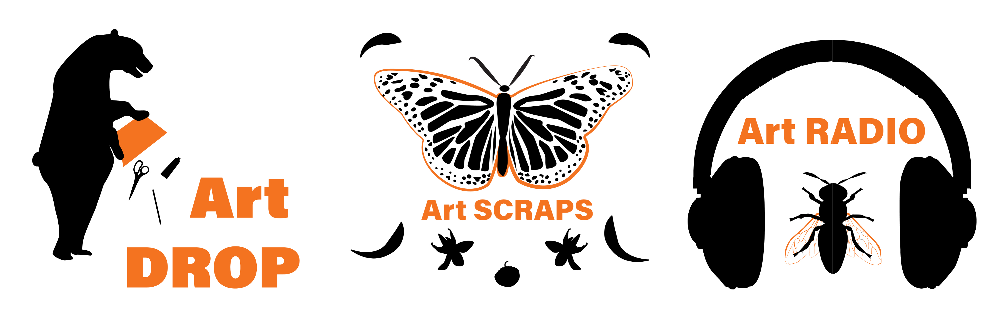
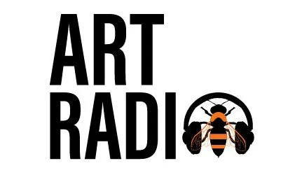

Siskiyou County Arts Council
Siskiyou County Arts Council is a nonprofit state-local partner to the California Arts Council, that ensures equitable access to the arts for our communities and support a vibrant, resilient, and diverse creative economy.
The Brief
The Siskiyou County Arts Council was in need of a family of logos for their programs. The logos needed to fit within their brand image, while reflecting the values and interests of the community they served. As a part of the Flagship Design Studio team, we developed concepts for the logos.
Research
I started the process by doing research on wildlife species local to the area, as the natural environment was one of the things the community connected over. Then I started sketching to brainstorm design ideas.
Concepts
The initial concepts were inspired by wildlife species indigenous to Siskiyou County and playful references to the Art Radio program. The Art DROP logo features the California Black Bear playing with a box of art supplies. The SCRAPS Art Cart logo includes the Monarch Butterfly made up of scraps as a playful reference to the program turning recycled scraps into art. Lastly, the Art RADIO logo has the Bombus Franklini Bee on headphones, so he can hear what the buzz on the Art RADIO podcast is.

Revisions
After reviewing the various logo packages presented from our design team, the client liked the bee and headphones element from my Art RADIO logo but the typography and layout from another designer on our team. We were then able to collaborate and combine our elements to please the client. The final design was created by Erin Gottis and I. It is currently being used by our client to represent their Art Radio program.
